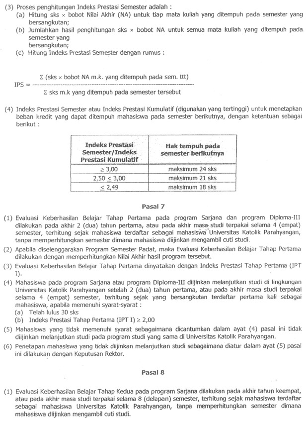
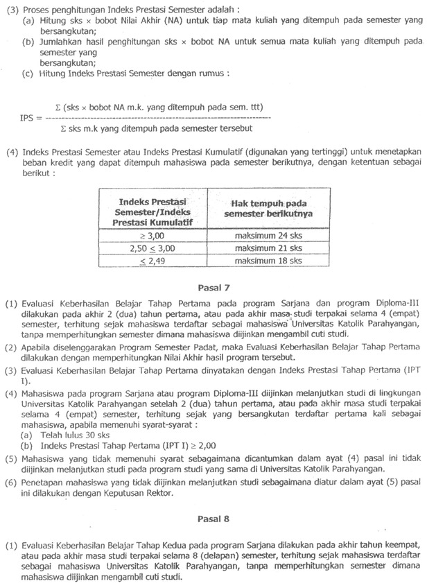  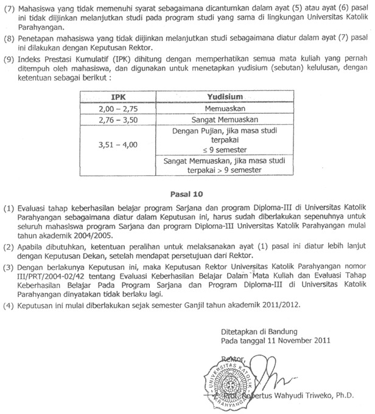
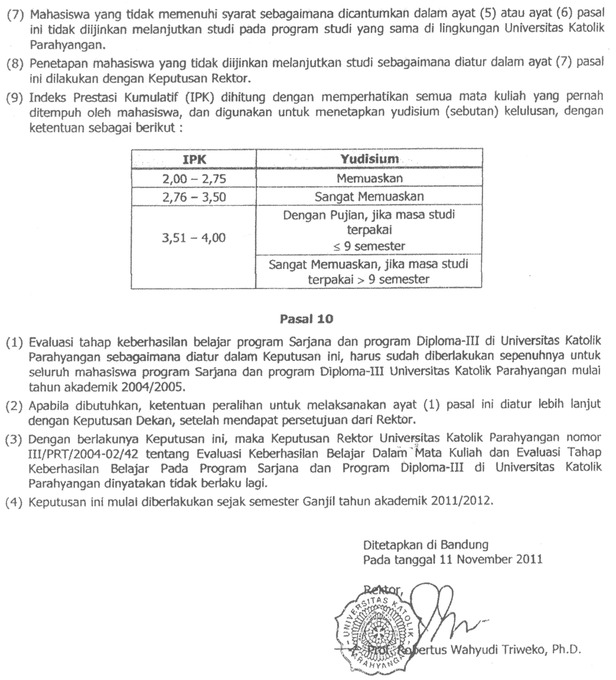JADWAL AKADEMIK TAHUN AKADEMIK 2014/2015
| Kegiatan | Semester Ganjil | Semester Genap |
|---|---|---|
| Perwaliaan dan FRS | Senin-Kamis, 21-24 Juli 2014 | Selasa-Jumat, 13-16 Januari 2015 |
| Awal Perkuliahan | Senin, 18 Agustus 2014 | Senin, 26 Januari 2015 |
| PRS | Senin-Selasa, 1-2 September 2014 | Senin-Selasa, 9-10 Februari 2015 |
| UTS | Senin-Jumat, 6-18 Oktober 2014 | Senin-Jumat, 16-28 Maret 2015 |
| Akhir Perkuliahan | Sabtu, 6 Desember 2014 | Sabtu, 23 Mei 2015 |
| UAS | Senin-Jumat, 8-20 Desember 2014 | Senin-Jumat, 25 Mei-6 Juni 2015 |
| Pengumuman Nilai Akhir | Jumat, 9 Januari 2015 | Senin, 24 Juni 2015 |
JADWAL PEMBAYARAN BIAYA STUDI TAHUN AKADEMIK 2014/2015
| Tahap | Semester Ganjil | Semester Genap |
|---|---|---|
| Tahap I(BRP dan 10 SKS) | Kamis, 14 Juli 2014 | Jumat, Januari 2015 |
| Tahap II(Pelunasan SKS dan SAPR) | Senin, 29 September 2014 | Senin, 9 Maret 2015 |
SIDANG SARJANA DAN WISUDA TAHUN AKADEMIK 2014/2015
| Periode | |||
|---|---|---|---|
| LIX | LX | LXI | |
| Batas akhir pendaftaran Sidang Sarjana | Jumat, 26 September 2014 | Jumat, 16 Januari 2015 | Jumat, 12 Juni 2015 |
| Sidang Sarjana | Senin, 29 September 2014 | Jumat, 3 Oktober 2014 | Jumat, 23 Januari 2015 |
| Batas akhir pendaftaran wisuda | Senin, 6 Oktober 2014 | Senin, 2 Februari 2015 | Kamis, 25 Juni 2015 |
| Wisuda | Sabtu, 1 November 2014 | Sabtu, 28 Februari 2015 | Sabtu, 8 Agustus 2015 |
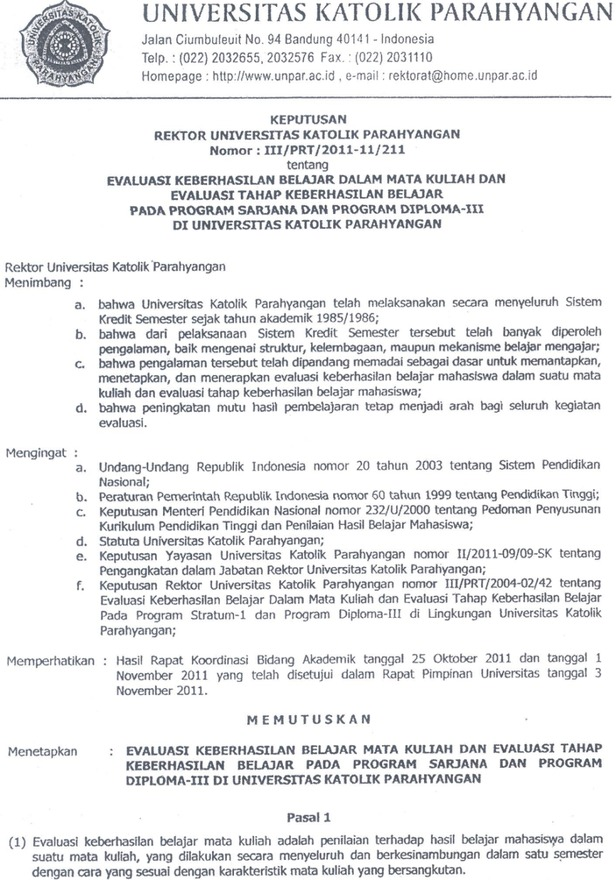 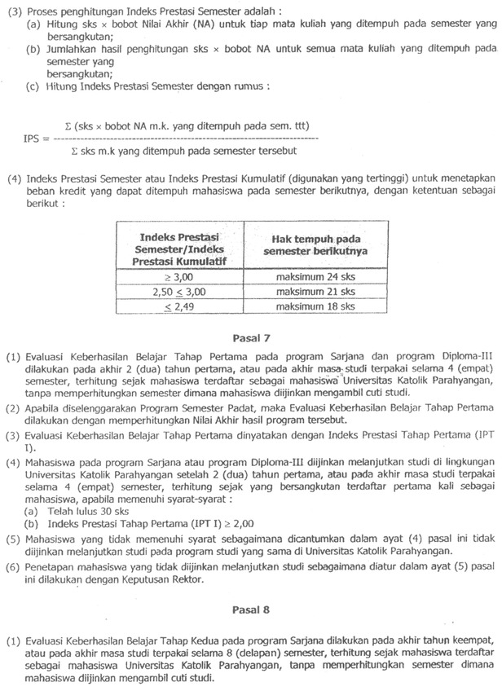 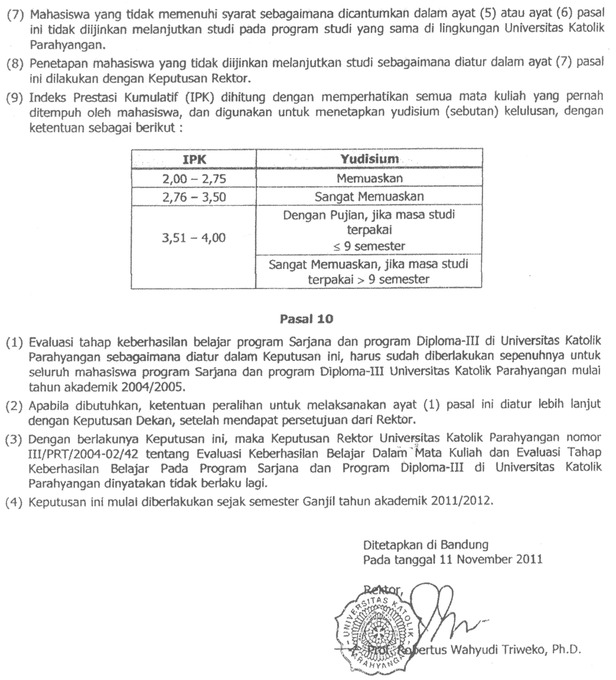
 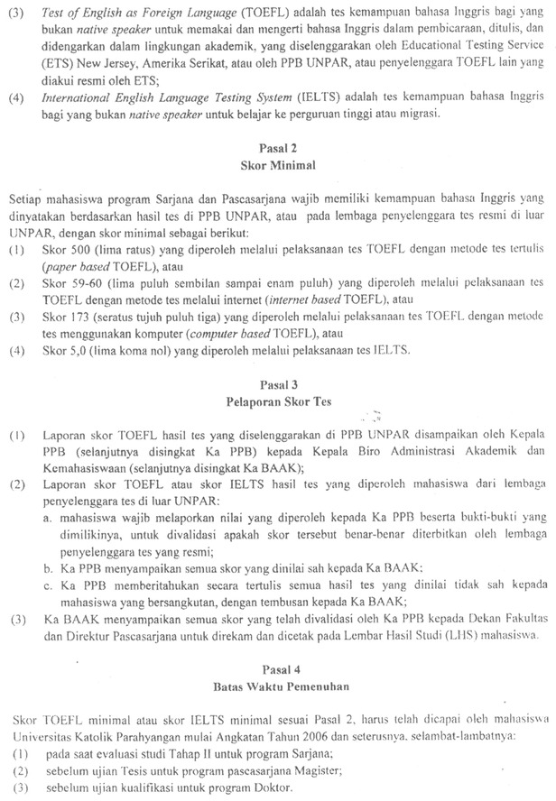 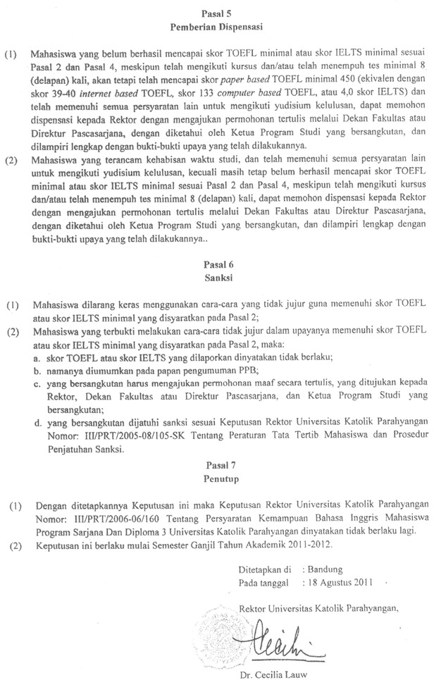
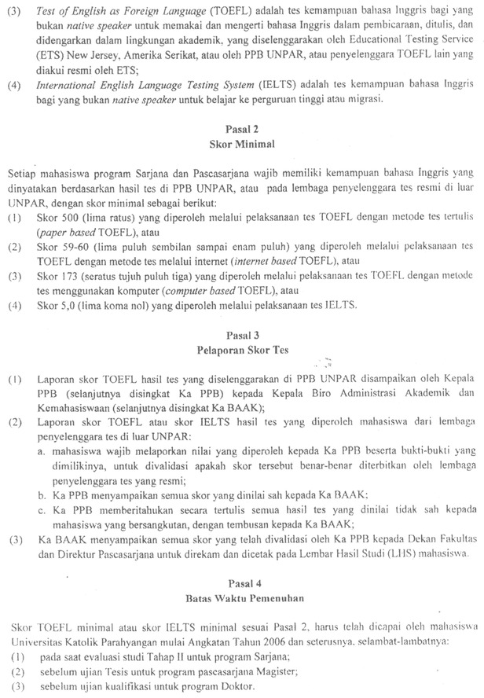 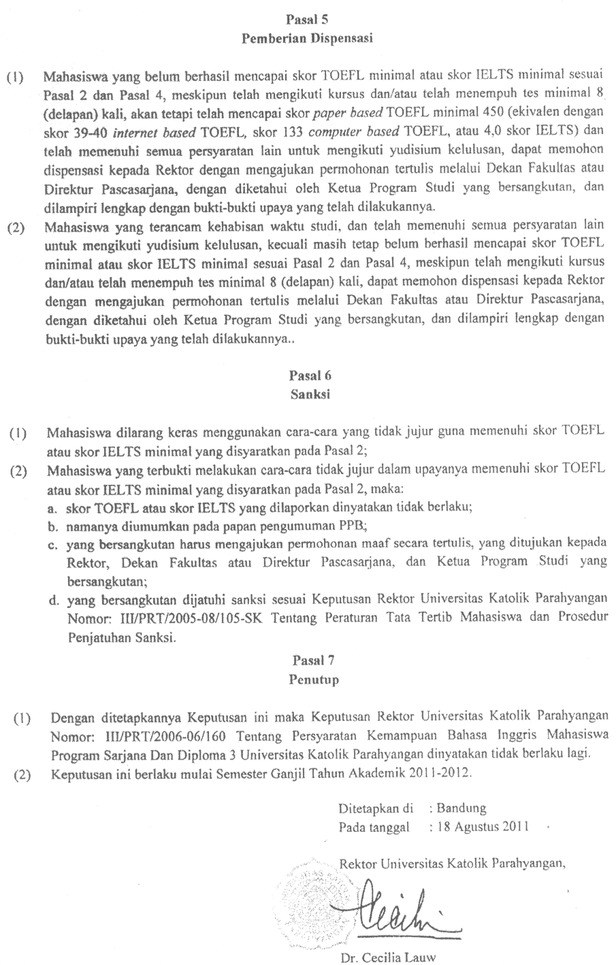


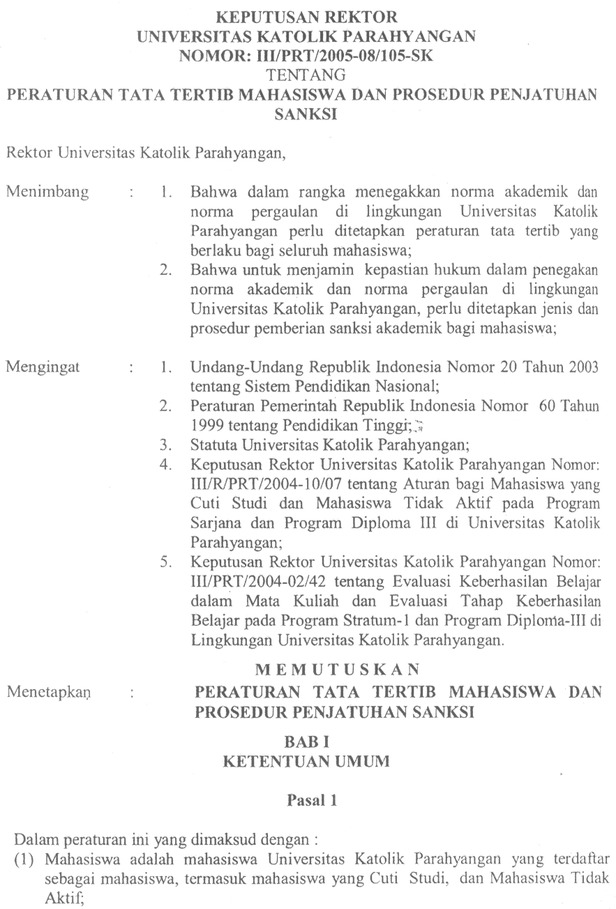 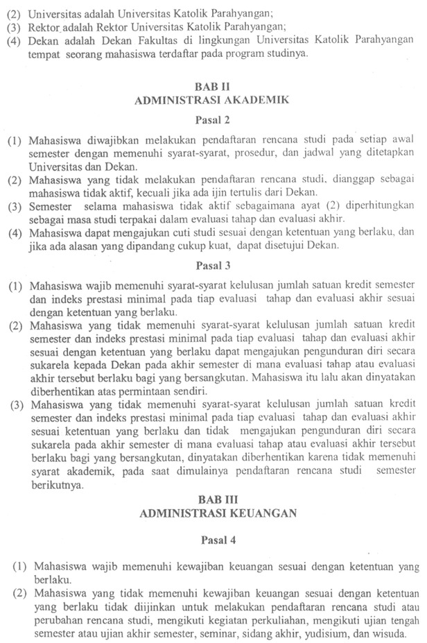 
 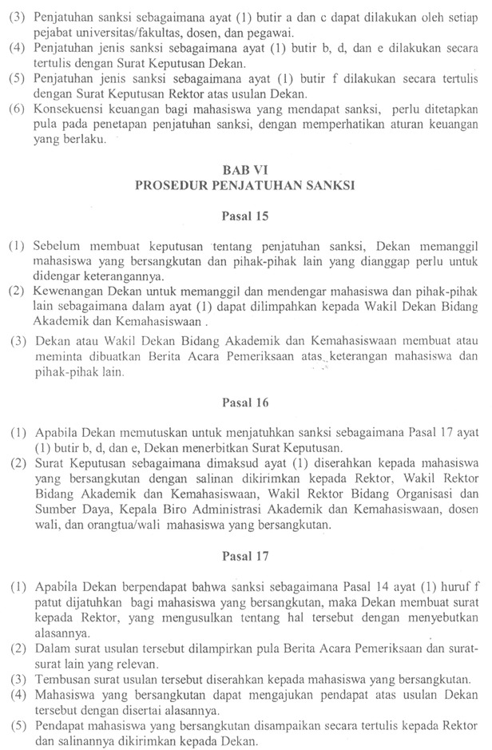
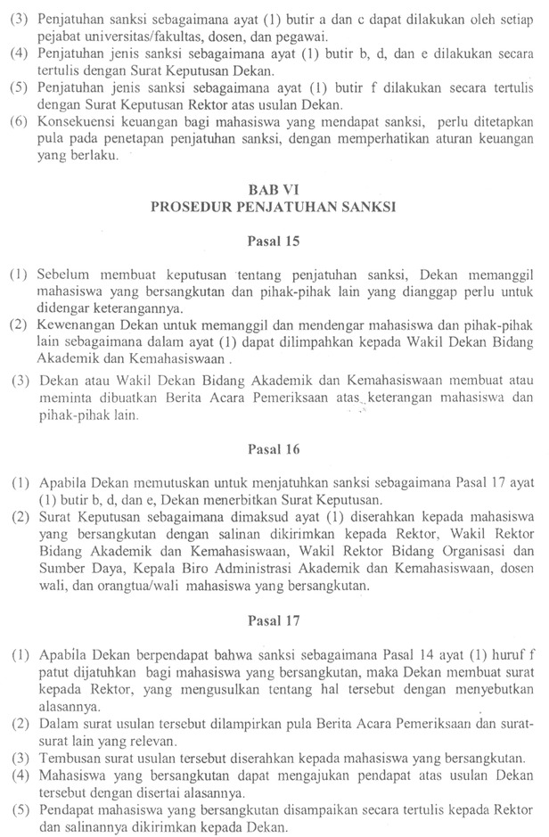